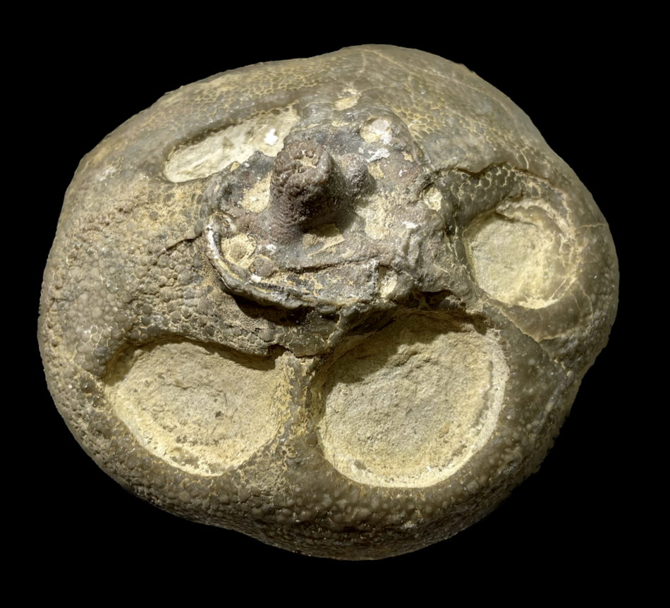

Scyphocrinites sp.
Size: 12 cm acrossThis type of fossil was initially described as a crinoid known as "Camarocrinus ulrichi". Eventually (and presumably after the well-preserved Moroccan Scyphocrinites were found highly associated with similar structures), it was re-evaluated as being a Scyphocrinites crinoid's lobolith, which is a float-like holdfast that would fill will gas and suspend the crinoid upside down in the water to live a drifting, pseudoplanktonic lifestyle. This particular specimen is from the Devonian instead of the Silurian, so evidently Scyphocrinites also occurs in the Devonian of the USA, though I have not yet looked into the literature. |
 |
|---|
Copyright © 2024 by Samuel Kim, all rights reserved